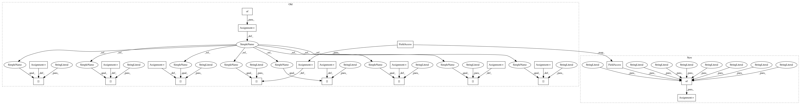

60b7f9d068dbe4204a83ed9b90fa0a4138f7d594,poseidon/monitor.py,Monitor,get_hosts,#Monitor#,84
Before Change
// TODO consolidate with update_endpoint_metadata
hosts = []
for hash_id, endpoint in self.s.endpoints.items():
host = {}
ipv4_os = "NO DATA"
role = "NO DATA"
if "mac_addresses" in endpoint.metadata:
for mac in endpoint.metadata["mac_addresses"]:
if "classification" in endpoint.metadata["mac_addresses"][mac]:
role = endpoint.metadata["mac_addresses"][mac]["classification"]["labels"][0]
if "ipv4_addresses" in endpoint.metadata:
for ip in endpoint.metadata["ipv4_addresses"]:
if ip == endpoint.endpoint_data["ipv4"]:
if "short_os" in endpoint.metadata["ipv4_addresses"][ip]:
ipv4_os = endpoint.metadata["ipv4_addresses"][ip]["short_os"]
host["mac"] = endpoint.endpoint_data["mac"]
host["id"] = hash_id
host["active"] = endpoint.endpoint_data["active"]
host["role"] = role
host["ipv4_os"] = ipv4_os
host["state"] = endpoint.state
host["tenant"] = endpoint.endpoint_data["tenant"]
host["port"] = endpoint.endpoint_data["port"]
host["segment"] = endpoint.endpoint_data["segment"]
host["ipv4"] = endpoint.endpoint_data["ipv4"]
hosts.append(host)
return hosts
After Change
if ip == endpoint.endpoint_data["ipv4"]:
if "short_os" in endpoint.metadata["ipv4_addresses"][ip]:
ipv4_os = endpoint.metadata["ipv4_addresses"][ip]["short_os"]
host = {
"mac": endpoint.endpoint_data["mac"],
"id": hash_id,
"role": role,
"ipv4_os": ipv4_os,
"state": endpoint.state,
"tenant": endpoint.endpoint_data["tenant"],
"port": endpoint.endpoint_data["port"],
"segment": endpoint.endpoint_data["segment"],
"ipv4": endpoint.endpoint_data["ipv4"]}
hosts.append(host)
return hosts
def job_update_metrics(self):
In pattern: SUPERPATTERN
Frequency: 3
Non-data size: 22
Instances
Project Name: CyberReboot/poseidon
Commit Name: 60b7f9d068dbe4204a83ed9b90fa0a4138f7d594
Time: 2020-12-14
Author: josh@vandervecken.com
File Name: poseidon/monitor.py
Class Name: Monitor
Method Name: get_hosts
Project Name: scipy/scipy
Commit Name: 694a088b4ecc62d8ebb2614c5ac66c52c08545d4
Time: 2015-11-08
Author: remy.leone@gmail.com
File Name: scipy/weave/c_spec.py
Class Name: common_base_converter
Method Name: template_vars
Project Name: CyberReboot/poseidon
Commit Name: 60b7f9d068dbe4204a83ed9b90fa0a4138f7d594
Time: 2020-12-14
Author: josh@vandervecken.com
File Name: poseidon/monitor.py
Class Name: Monitor
Method Name: get_hosts
Project Name: CyberReboot/poseidon
Commit Name: 3c178ec81b3f42f94acade79bf1b08868fa7347f
Time: 2019-10-01
Author: josh@vandervecken.com
File Name: poseidon/helpers/endpoint.py
Class Name: Endpoint
Method Name: encode